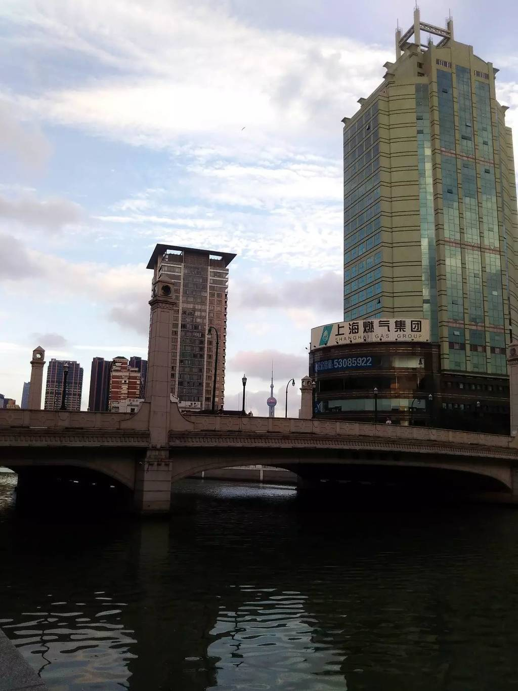

一如少年模样
这段时间晚上回来的都比较晚，一来天气太热，在公司可以蹭一下空调。二来，借此机会好好调整一下自己的学习状态，毕竟糟糕蛮长一段时间了。前些日子，有天晚上下了公交，走在路上，微风吹着，有种刹那间自己依然年少的错觉。不过，感觉只是瞬间的事情，毕竟自己已经不再那么年轻了（再过一年就是三十间隔年了）。
发现身边这个年纪的朋友，很多都是彷徨的，当然我也不例外。有些是为工作而烦恼的，有被家事困扰的，还有因为各种压力而焦虑的。开始的时候，大家还会发发牢骚，可是时间一久，发现如此下去总归不是办法，索性也就不说了，接着就是长时间的沉静状态。
以前的时候，会因为周遭环境一成不变的时候，会想着换一个环境。这也是我工作 5 年换了三座城市四份工作的原因之一，而现在倒不会这么想了。因为发现，不管换几座城市几份工作，如果自己不去主动改变，除去刚开始的新鲜感之后，周遭的环境终会变得相似。而最难或者说最能让自己蜕变的，可能就是在那一成不变的环境中，让自己变得不那么一样。
当然，我也不会否定之前换工作换城市的举动。毕竟，说不清对错，自己决定了自己去走好了，如果没有体验之前的经历，也许就不会有现在的这些感想了。另外，除却自我的因素，环境本就是决定自身发展至关重要的一点。

去年的这一天，离开老东家，离开上海时拍的，来杭州一周年了